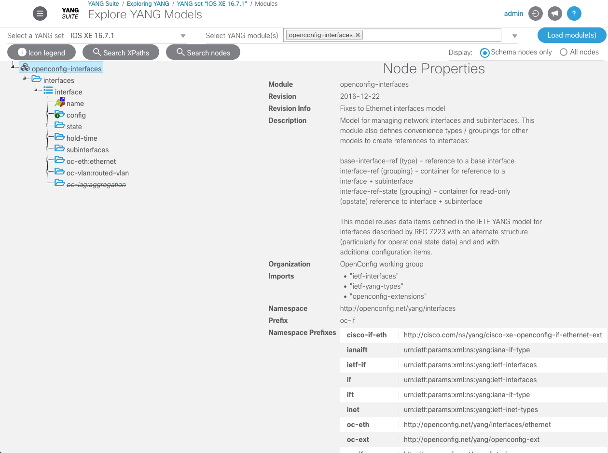
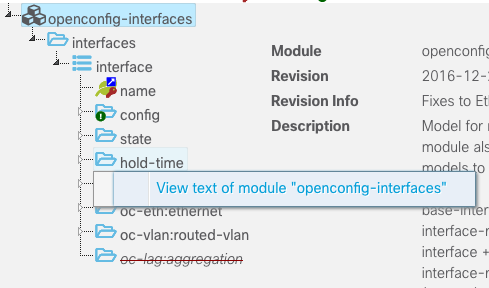
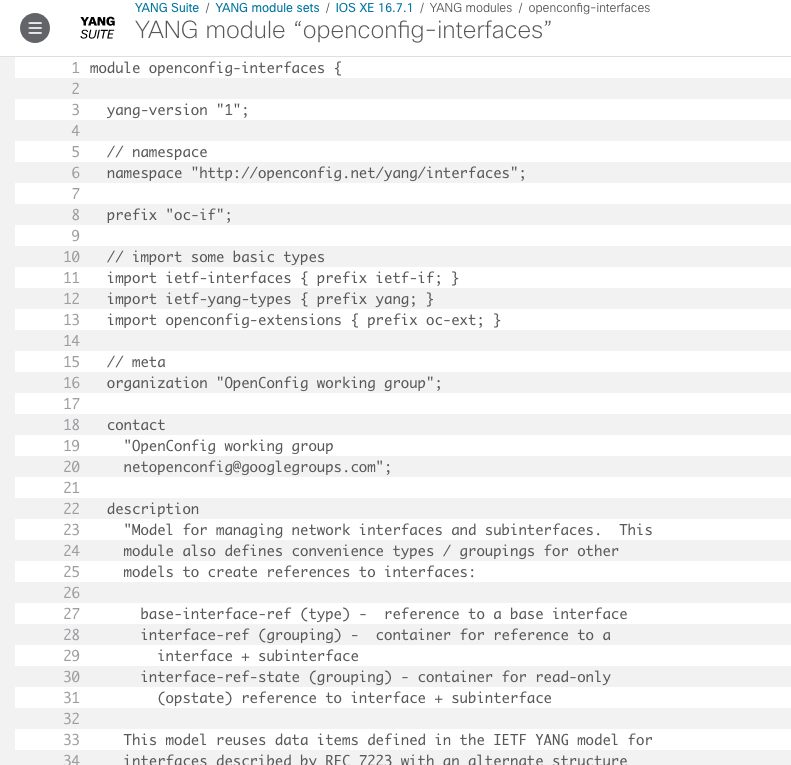

Exploring YANG Models¶
For you to explore YANG, the YANG Suite server needs YANG files. Once you have provided the files and defined a YANG module set using yangsuite-filemanager, you can then explore the structure of the models in the YANG set you have created.
From the menu bar at the top of this page, select “Operations → Explore YANG”.
Use the “Select a YANG set” menu to select the YANG set you wish to explore.
Begin typing in the “Select YANG Module(s)” text box to bring up a menu of modules in this YANG set corresponding to what you have typed.
From this menu, select the desired module(s), then select “Load module(s).”
It may take a short time for YANG Suite to load the module(s), depending on complexity of the module(s) and its dependencies. When ready the root node(s) of the model(s) will appear below in a tree view.
You can now explore the contents of the model(s) using the tree view. Click on any node in the tree to view information about it.
If you want to see the plain text of a YANG module, you can right-click on any node in the tree and select “View text of module” from the context menu.
A new window will open to display the module text.
